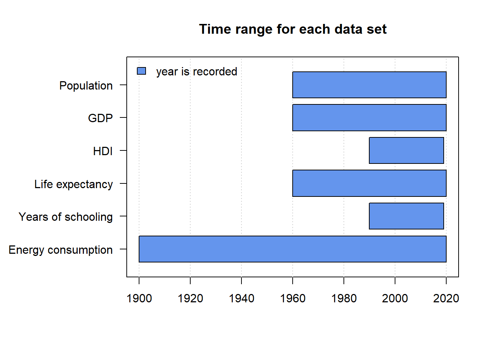
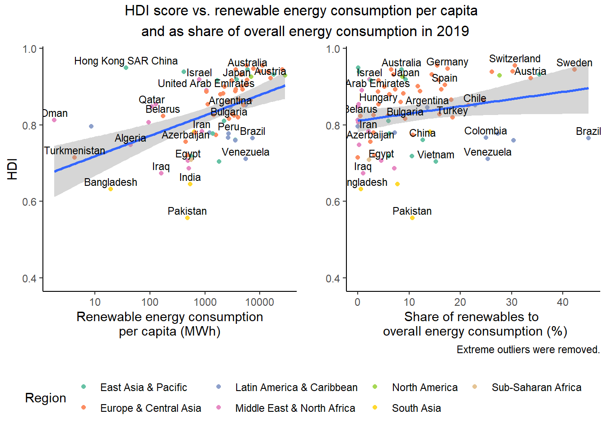

Chapter 4 Missing values
In this chapter, we analyze the missing data in our four primary data sets on energy consumption, GDP, life expectancy, years of schooling, and life expectancy.
4.1 Energy consumption
Data description: Energy consumption of different countries by the type of energy production.
We focus on the 1990-2020 time-frame.

Observations:
- 40% of rows are missing 75% of the variables. This might become a problem when comparing countries over time as this might suggest that some countries have only little data for a limited number of years.
- 30% of rows are complete, such that the energy mix can be fully analyzed.
- The remaining 30% of rows also miss a 56% to 81% of variables with some exceptions.
In order to have enough data to draw solid conclusions on these time series, we will probably have to select a sub-sample of countries.
Let’s now group the countries together so as to visualize missing data by geographic region.

Observations:
- Sub-Saharan Africa and Latin America have the most missing data.
- Europe & central Asia, as well as North America have the least missing values.
- For all regions, data availability remains largely constant over time with a high spike in 2020, year for which the data might not be collected yet.
- For some countries, no region could be identified. This is indicated by the label “Unmatched countries”. For better comparisons, these countries will be matched.
4.2 GDP per capita
Data description: Measure of a country’s economic output per person calculated by dividing the GDP of a country by its population.
We focus on the 1990-2019 time-frame.
Observations:
- The highest sparsity is recorded for the most ancient years of the time frame. Data becomes increasingly unavailable as we go back in time.
- Complete cases account for almost 80% of the data. For all of these countries, the data gives a full picture of the evolution of GDP per capita across time.
- A small proportion of countries present a missing pattern of total unavailability of GDP per capita. The list of those countries is displayed just below. We see that these correspond to countries that either (1) do not share their data eg. Korea or (2) have a very small population and/or economic output eg. small islands like St.Martin.
| Countries with full missing pattern |
|---|
| Gibraltar |
| Not classified |
| St. Martin (French part) |
| Korea, Dem. People’s Rep. |
| British Virgin Islands |
4.3 Life expectancy
Data description: Mean length of life of an actual birth cohort (all individuals born in a given year).
We focus on the 1990-2019 time-frame.

Observations:
- Life expectancy data becomes slightly sparser as we go back in time. However, the proportion of missing data stays within the range 6-8%.
- Complete cases account for almost 90% of the data. For all of these countries, the data gives a full picture of the evolution of life expectancy across time.
- The second most frequent missing pattern corresponds to total unavailability of life expectancy within the time frame. The list of those countries is displayed just below. We see that these correspond to either (1) unclassified data or (2) countries with very small population for which it is difficult to conduct data collection eg. small islands like American Samoa.
| Countries with full missing pattern |
|---|
| Andorra |
| American Samoa |
| Gibraltar |
| Not classified |
| Monaco |
| Northern Mariana Islands |
| Nauru |
| Turks and Caicos Islands |
| Tuvalu |
| British Virgin Islands |
4.4 Years of schooling
Data description: Number of years of schooling that a child of school entrance age can expect to receive if prevailing patterns of age-specific enrollment rates persist throughout the child’s life.
We focus on the 1990-2019 time-frame.

Observations:
- As for previous variables, sparsity increases when we look at more ancient years, but never exceeds 12%.
- Complete cases account for almost 90% of the data. For all of these countries, the data gives a full picture of the evolution of the years of schooling across time.
- A few countries are not ranked in terms of HDI. These countries are displayed below and correspond to countries that either (1) do not share their data eg. Korea or (2) countries with very small population (empirically < 40k) for which it is difficult to conduct data collection eg. Nauru.
| Countries with no HDI rank |
|---|
| Korea (Democratic People’s Rep. of) |
| Nauru |
| San Marino |
| Tuvalu |